apuntarseAEvento(nombreEvento:String, idUsuario:String): boolean
UMLActivity
Untitled
::
Diagramas de Actividad
::
apuntarseAEvento(nombreEvento:String, idUsuario:String): boolean
Description
none
Diagrams

apuntarseEvento
Nodes
obtener evento
ForkNode1
obtener comunidad anfitriona del evento
comprobar fechaActual < evento.fechaInicio
JoinNode1
comprobar si el ususario esta en la comunidad
in nombreEvento: String
obtener usuario
in idUsuario: String
ForkNode2
DecisionNode1
escribir falso
out : boolean
DecisionNode2
inscribir usuario al evento
escribir verdadero
ActivityFinalNode1
InitialNode1
InitialNode2
InitialNode3
InitialNode4
Edges
(obtener evento→ForkNode1)
(ForkNode1→obtener comunidad anfitriona del evento)
(ForkNode1→comprobar fechaActual < evento.fechaInicio)
(obtener comunidad anfitriona del evento→comprobar si el ususario esta en la comunidad)
(ForkNode1→evento)
(evento→ForkNode1)
(comunidad→comunidad)
(in nombreEvento: String→obtener evento)
(obtener usuario→in idUsuario: String)
(in idUsuario: String→obtener usuario)
(usuario→ForkNode2)
(ForkNode2→usuario)
(result→DecisionNode1)
[false] (DecisionNode1→escribir falso)
(escribir falso→out : boolean)
[true] (DecisionNode1→comprobar fechaActual < evento.fechaInicio)
(ForkNode2→usuario)
(ForkNode1→evento)
(result→DecisionNode2)
[true] (DecisionNode2→inscribir usuario al evento)
(escribir verdadero→ActivityFinalNode1)
(escribir falso→ActivityFinalNode1)
(escribir verdadero→out : boolean)
(inscribir usuario al evento→escribir verdadero)
(ForkNode2→usuario)
(ForkNode1→evento)
[false] (DecisionNode2→escribir falso)
(InitialNode3→obtener comunidad anfitriona del evento)
(InitialNode1→obtener usuario)
(InitialNode4→obtener evento)
Properties
Name
Value
name
apuntarseAEvento(nombreEvento:String, idUsuario:String): boolean
stereotype
null
visibility
public
isReentrant
true
isReadOnly
false
isSingleExecution
false
Owned Elements
apuntarseEvento